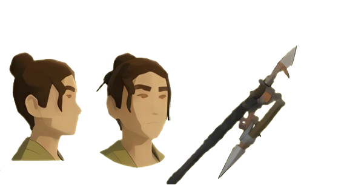

A missão de proteger a população da sua vila foi dada a você. Com as habilidades e o requisitos necessários, nenhuma ameaça são perigo o suficiente.
Gyoran é a personagem central de Ecos do Oriente. Como guardiã da sua vila, ela une forças contigo para defender o seu povo contra as anomalias místicas que ameaçam a região. Armada com a sua lança de lâmina dupla e guiada por uma disciplina inabalável, Gyoran combate na linha da frente para restaurar a paz e o equilíbrio.
